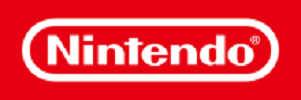

| 
Nintendo Co., Ltd. is a Japanese multinational consumer electronics and video game company. Nintendo is one of the world's largest video game companies by market captialization, creating some of the best-known and top-selling video game franchises, such as Mario, The Legend of Zelda, and Pokemon. Nintendo originally produced handmade hanafuda playing cards, but in the 1970s, Nintendo developed into a video game company.
|